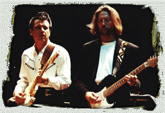

Судьба распорядилась так, что "Family Style" стал последней студийной работой Стиви. 27 августа 1990 года, за две с половиной недели до официального релиза этого альбома, Стиви Рэй Воэн трагически погиб в вертолетной катастрофе. "Все меняется, когда что-то подобное происходит в твоей жизни - говорил Джимми в интервью "Boston Globe" - Я не прекратил играть, но не хотел ни выступать, ни записываться." Публичные выступления в последующие полтора года свелись к джему с Эриком Клэптоном (Eric Clapton), Бадди Гаем и Робертом Крэем(Robert Cray) в лондонском Royal Albert Hall, а также к сетам с Бобом Диланом (Bob Dylan) и Лези Лестером в Остине. Джимми посчитал себя по-настоящему ответственным за творческое наследие брата, дабы оно не было пущено по ветру, как в случае с Хендриксом. Около года Джимми провел в студии, отбирая и доводя до ума сохранившиеся треки Стиви Рэя и его группы "Double Trouble". Результатом стали два посмертных альбома "The Sky Is Cryin'" и "In The Begining", концертное видео "Live At The ElMocambo".  В 1992 году Эрик Клэптон обратился к Воэну с просьбой, открыть серию его (клэптоновских) концертов. "Я был не в силах отказать ему - вспоминал Джимми (вместе со Стиви тогда погибли агент Клэптона, его телохранитель, и помошник тур-менеджера) - Я собрал группу, и мы отыграли эти концерты в феврале-марте 93-го. По-моему, их было 16, и мы получили от них настоящее удовольствие. По возвращении домой, я сказал себе: "Чем собираешся заняться? А ну-ка давай-ка сделай что-нибудь!" Так началась работа над новым альбомом..." |